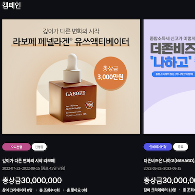

|
A function to Log-In with SNS You can log in with your Naver, Kakao, Google, or TikTok accounts. |
|
|
A function to Add Pre-Campaign We can add pre-campaigns from the admin page. |
|
|  |
A function to Attend Pre-Campaign Creators can participate in pre-campaigns. |